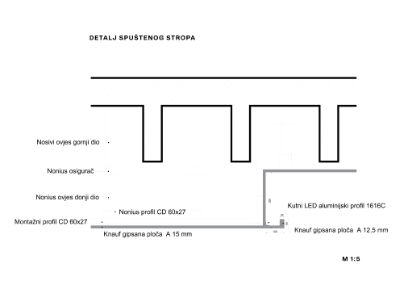

Andy
Warhol Loft
Mentor: Robert Š imetin
Interieur 2
2023.
The loft is designed according to specific requirements that would suit the lifestyle of the pop
art artist Andy Warhol. Referring to his Silver Factory where he spent most of his time, the
design requirements for the space are defined. Predetermined activities that would be enabled in
the loft include: silkscreen printing, film recording, displaying works, hosting concerts and
events, and socializing with other artists. Additionally, the loft contains a private area that
meets the basic living needs of a bohemian artist's lifestyle. The space reflects a way of life
that entails constant creativity. Elements in the space are arranged in a manner that follows a
grid opposing the given grid of the existing loft, thus achieving spatial dynamics. The lowered
ceiling, designed with gypsum panels, also follows the added grid, and indirect LED lighting is
integrated into it.
Drawing inspiration from the ambiance of his famed
Silver Factory, the design blueprint for
this space is meticulously crafted. It's envisioned as a haven where specific activities
integral to Warhol's creative realm can flourish: envision silkscreen printing stations, areas
dedicated to film recording, platforms for showcasing artistic endeavors, arenas for hosting
vibrant concerts and events, and zones conducive to fostering connections among fellow artists.
Moreover, the loft harbors a secluded enclave designed to cater to the fundamental living
essentials synonymous with the bohemian artist's lifestyle.

lighting integrated into the lowered ceiling


The lighting system comprises integrated indirect LED fixtures nestled within a lowered ceiling
constructed with gypsum panels. This lowered ceiling features a grid-like design, strategically
facilitating the placement of these gypsum panels. The integration of indirect LED lights within
this structure offers a sleek and modern illumination solution, providing both functionality and
aesthetic appeal to the space.